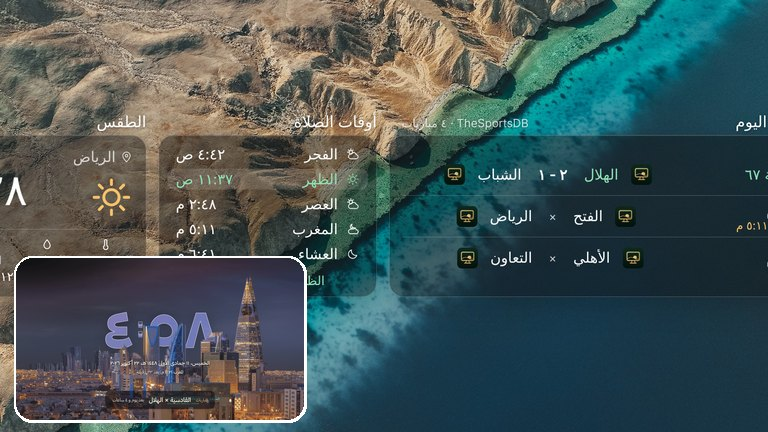
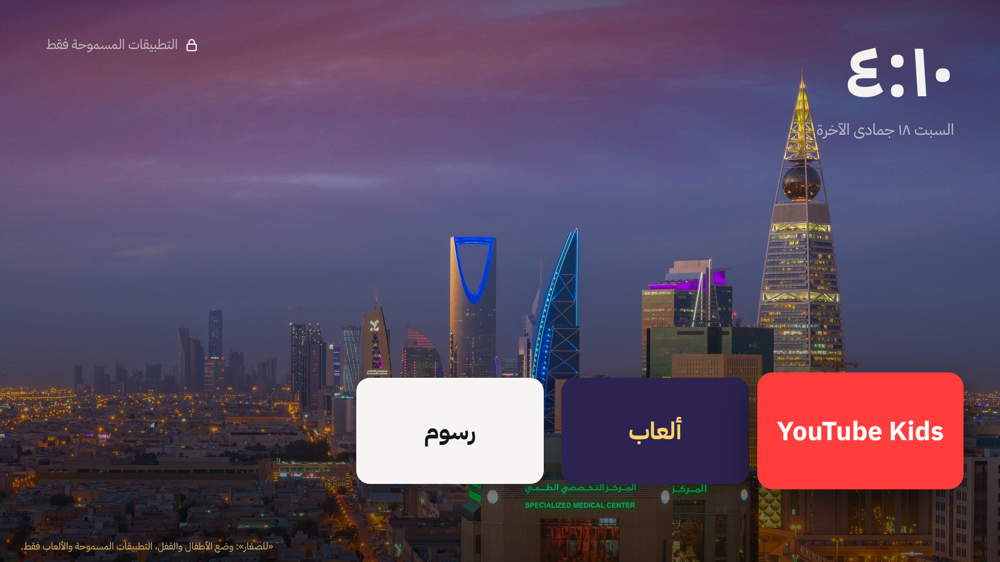
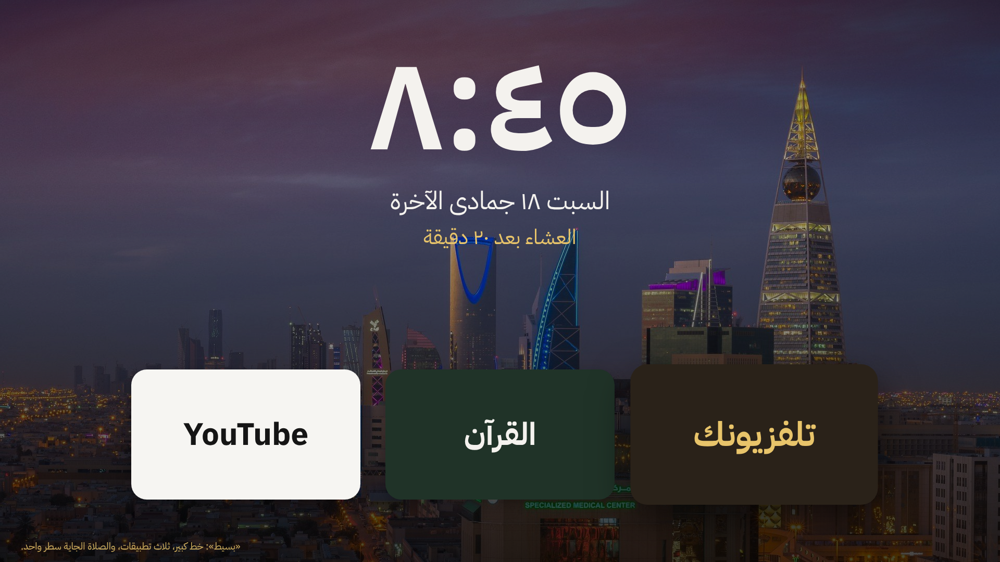

اختر كيف يبدأ تلفزيونك. أي جزء تقدر تضيفه أو تشيله بعدين من الإعدادات.

نظيفالساعة والتطبيقات، وبس

كاملكل شي، وتختار وش تشيل

كنبةساعة كبيرة في الوسط، بلا بطاقات

مصلّيالمواقيت والأذان وتلاوة وأذان

رياضةمباريات اليوم وفرقك

للصغارتطبيقاتهم والألعاب، والباقي مقفول

بسيطخط كبير وتطبيقات قليلة

مثل ما هوالحاليما يتغيّر شي
يشتغلالساعة والتاريخ، والتطبيقات، وزر الإعدادات
ما يشتغل، وتضيفه متى ما تبيالبطاقات، والمباريات، والأسواق، وتلاوة وأذان، والأذان، وشاشة التوقف، والألعاب
موافق يختاره. تلقاه بعدين في الإعدادات ← الشكل ← ابدأ من جديد
أول تشغيل للرئيسية بعد التثبيت. التركيز على «نظيف»: تحت الشبكة وش يشتغل ووش لا.